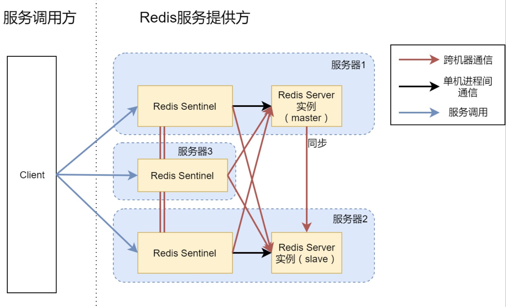
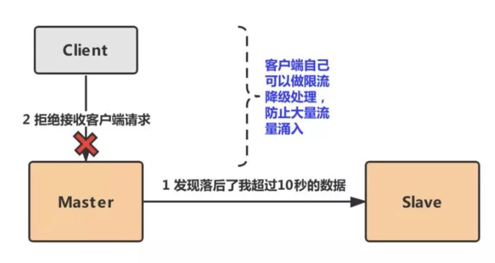

一、主从复制的问题
redis主从复制有个缺点，当主机master宕机以后，我们需要人工解决切换，比如使用slaveof on one。主从复制并没事实现高可用，高可用需要在某台机器发生故障之后，其他后备的机器可以迅速的接替并提供服务。
二、如何解决
如果我们有一个监控程序能够监控各个机器的状态，并及时调整，将手动操作变成自动的。Sentinel就是解决此问题的。
三、哨兵机制的原理
Redis Sentinel一个分布式架构，其中包含若干个Sentinel节点和Redis数据节点，每个Sentinel节点会对Redis数据节点以及其他的Sentinel节点进行监控，如果发现节点不可达时，会对节点做下线标识。
如果被标识的是主节点，它还会和其他Sentinel节点进行“协商”。当大多数Sentinel认为主节点不可达时，它们会选举出一个Sentinel节点进行故障转移的工作，同时会将整个变化通知Redis应用方。整个过程是自动的，不需要人工介入，所以有效的解决了Redis高可用的问题。

四、Sentinel包含的功能
监控：Sentinel会定期检查Redis数据节点，以及其他Sentinel节点是否可达
通知：Sentinel会将故障转移的结果通知给应用方
主节点故障转移：实现从节点晋升主节点并维护后续正确的主从关系
充当配置中心：如果发生故障转移，会通知将master的新地址写在配置中心告诉客户端
五、Sentinel实现原理
1、检测问题
– 主要是三个定时任务
每隔10秒， 每个Sentinel节点会向主节点和从节点发送info命令获取最新的拓扑结构。
每隔2秒， 每个Sentinel节点会向Redis数据节点的__sentinel__： hello 频道上发送该Sentinel节点对于主节点的判断以及当前Sentinel节点的信息， 同时每个Sentinel节点也会订阅该频道， 来了解其他Sentinel节点以及它们对主节点的判断。
每隔1秒， 每个Sentinel节点会向主节点、 从节点、 其余Sentinel节点发送一条ping命令做一次心跳检测， 来确认这些节点当前是否可达。
2、发现问题
主要讲的是客观下线和主关下线。如果Sentinel机器发现问题，就会对它主观下线。当多个Sentinel都发现有问题的时候，才会进行客观下线。
sdown，即主观宕机，如果一个哨兵它自己觉得master宕机了，就是主观宕机
odown，即客观宕机，如果quorum数量的哨兵都认为一个master宕机了，则为客观宕机
哨兵在ping一个master的时候，如果超过了is-master-down-after-milliseconds指定的毫秒数之后，就是达到了sdown，就主观认为master宕机了。
如果一个哨兵在指定时间内，收到了quorum指定数量的其他哨兵也认为那个master是sdown了，那么就认为是odown了，客观认为master宕机，就完成了sdown到odown的转换。
3、解决问题-领导者选举
如果一个master被认为odown了，而且majority哨兵都允许了主备切换，那么某个哨兵就会执行主备切换操作，此时首先要选举一个slave来，主要通过下面几个步骤：
按照slave优先级进行排序，slave priority越低，优先级就越高。
如果slave priority相同，那么看replica offset，哪个slave复制了越多的数据，offset越靠后，优先级就越高。
如果上面两个条件都相同，那么选择一个run id比较小的那个slave
4、解决问题-故障转移
a. 领导者sentinel从slave中选一台，对这个slave执行slaveof no one 让其成为master。
b. 向剩余的slave发送命令，执行slaveof 让其成为新master的slave节点。此时新master不会对slave进行全量复制（这个通过查看新master和slave的日志文件看到确实没有进行全量复制，而是Trying a partial resynchronization …即部分复制），而是进行一个部分复制（如果偏移量不超出新master的复制积压缓冲区的话）
c. 故障转移后，sentinel会关注原master，如果原master重启，sentinel会将让其同步新master，它自己就变成了slave。此时master会对这个重启的slave进行全量复制。
六、哨兵常见问题与解决方法
哨兵在发现master node挂掉之后，其中一个slave node会提升为master node。在这过程中，可能会发生数据丢失。
主从异步导致的数据丢失
问题：因为master->slave的复制是异步的，有可能部分没有来得及复制master就宕机了
解决：配置min-slaves-max-lag=10（ 数据复制和同步的延迟不能超过10S），当我们的slave在数据复制的时候，发现返回的ACK时延太长达到了 min-slaves-max-lag 配置，这个时候就会认为如果master宕机就会导致大量数据丢失，提前进行了预测，就不再去接收客户端的任何请求了，来将丢失的数据降低在可控范围内。

脑裂导致的数据丢失
问题：所谓的脑裂，就是指在主从集群中，同时有两个主节点，它们都能接收写请求。而脑裂最直接的影响，就是客户端不知道应该往哪个主节点写入数据，结果就是不同的客户端会往不同的主节点上写入数据。而且，严重的话，脑裂会进一步导致数据丢失。
解决：设置min-slaves-to-write（主库连接的从库中 至少有 N 个从库）、min-slaves-max-lag=10（ 数据复制和同步的延迟不能超过10S） 如果master出现了脑裂与其他的slave失去了通信，master不能给指定数量的salve发送数据，slave超过10S没有给自己返回ack消息，master就会拒接客户端的写入。